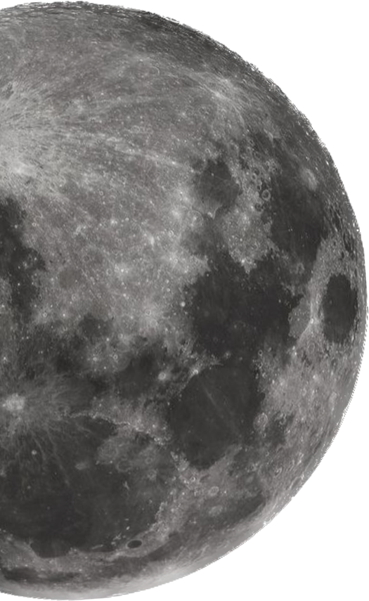

[вырезать]
███ █████ ██████ ██████, ███ ██ ██████ █ ███ ███ █████████, █ ███ ████ ██████████ ████, ██ █████████ ███ ██ ████, ██ █████ ██ ████████ ██████, █ █████ ████ ███ ██ ████, ██ ████████ █████ █████, ██ ████████. ██████-██ █ █████████ █████ ███ █ ██████ █ ████████.
[вырезать]
Я общаюсь с каким-то пацаном, он предлагает мне сыграть в игру. Я помню, что в каком-то сне.. а, или мне дядька предлагал. Не помню. Но мне предложили сыграть в игру, где нужно бумажную штуку как-то так кинуть, чтобы перевернуть штуку оппонента. Я помню что в прошлом сне когда-то кого-то выигрывал, и он предложил реванш. До которого дело не дошло.
Затем тот резко теряется на улице, я бегу с какой-то деффкой, мы будто друзья даже. Пробегали знакомые места - Монтага, или же место, где я живу. Район, так сказать. Перепрыгивая лавку, я сказал что-то типо: "Знаешь, а наверное то, что нужно - у меня есть..(?)"
Я не помню своей фразы, зато помню её ответ: "5 сомнительных друзей? И это все, что тебе нужно?"
На что был мой ответ: "Ну.. звучит так себе, но, кажется да?.."
Потом из памяти что мы выбежали чуть в другое место. Бег как будто знаешь, тот который по утрам или вечерам. Я втопил вперёд достаточно сильно, и место напоминало место из прошлых снов. После кулинарии, там есть мелкое недо-поле, прям очень маленькое, там зимой всегда образовывалась горка из снега, где в детстве я игрался после английского. Только она была песчаная. Я втоптал побыстрее, добежал до этой горки первый. В несколько прыжков я перелез через нее, как будто делал это всю жизнь, и достаточно быстро слез, пробежавшись до какого-то недо-участка, напоминающего заброшенный полицейский, которого в жизни там никогда не стояло. Я проходил несколько шагов через сквозные двери через разруху, и выходил с видом на реальную мусорку и часть того, что я и должен оттуда видеть, и даже из моих окон это видно. Около двери в нескольких шагах валялся черный пёс, который видать от жары спит, и какие-то псы мимо помойки проходили.
Я возвращаюсь обратно, таким же беговым темпом, снова очень легко забираюсь, та девушка уже добежала, пыталась залезть, но безуспешно. Я слез к ней, и на этом как-то всё кончилось.
У нее как будто был псевдоним "███████", не знаю почему. Реального имени не знаю.
UPD: Детали относительно помнятся до сих пор (11.05.2023). Лицо размыто. Всё что я помню - кажется, белая прядь волос передняя. Но даже рост и прочие данные восстановить не удалось.
